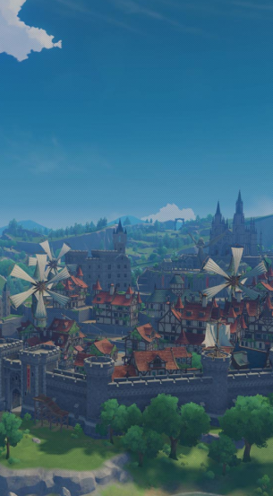
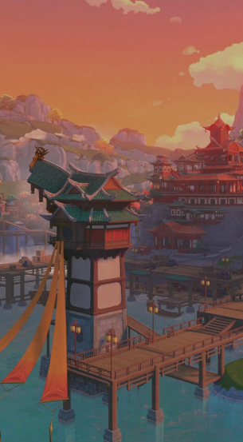
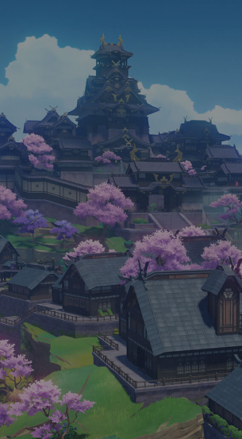
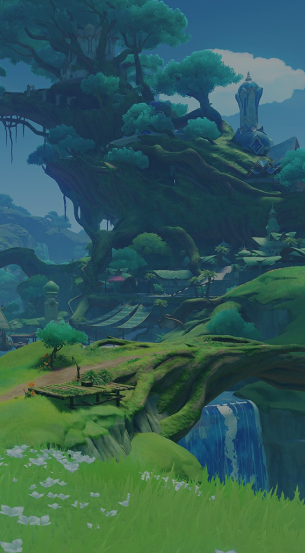

Teyvat is a wondrous world full of breathtaking landscapes and
fascinating civilizations that beckon adventurers to explore its
hidden secrets.
MAPS

Mondstadt
The city of freedom, located in the northeastern part of
Teyvat, stands majestically on an island in the middle of a
lake. The wind blows over the mountains and fields, carrying
the scent of dandelion seeds — blessings from the Anemo god,
Barbatos — who fly from Cider Lake to Mondstadt, looking for a
place to plant their roots.

Liyue
The port is located in the East Teyvat section. The mountains
stand majestically around a stretch of stone forest,
accompanying a wide field and a river full of life, making the
beautiful and natural beauty of Liyue's landscape, painted in
different colors as the seasons change.

Inazuma
Closed Archipelago Far East of TeyvatFace relentless
thunderstorms, and set foot on an island covered in red maples
and cherry blossoms. On winding coastlines, on towering
cliffs, in forests and mountains full of secrets, witness the
Eternal being chased by His Majesty — the Almighty Narukami
Ogosho.

Sumeru
A university town located in the center of the west side of
Teyvat. An exotic nation where there are lush rainforests and
barren deserts. Countless fruits of wisdom took root,
blossomed, and withered here.